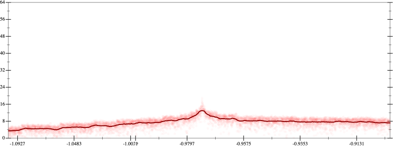
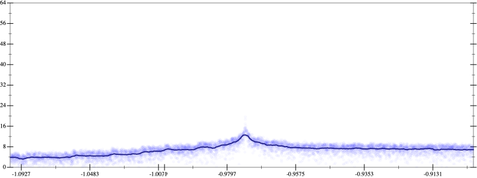
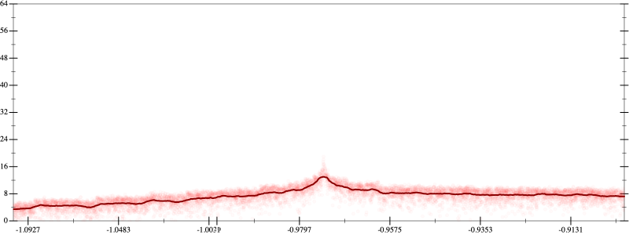
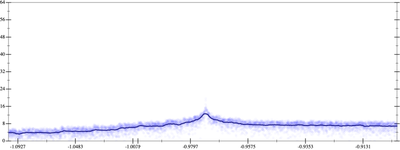

Initial program 7.2
\[\left(\left(\left(\left(-0.246094 + 13.535156 \cdot \left(x \cdot x\right)\right) + -117.304688 \cdot \left(\left(\left(x \cdot x\right) \cdot x\right) \cdot x\right)\right) + 351.914062 \cdot \left(\left(\left(\left(\left(x \cdot x\right) \cdot x\right) \cdot x\right) \cdot x\right) \cdot x\right)\right) + -427.324219 \cdot \left(\left(\left(\left(\left(\left(\left(x \cdot x\right) \cdot x\right) \cdot x\right) \cdot x\right) \cdot x\right) \cdot x\right) \cdot x\right)\right) + 180.425781 \cdot \left(\left(\left(\left(\left(\left(\left(\left(\left(x \cdot x\right) \cdot x\right) \cdot x\right) \cdot x\right) \cdot x\right) \cdot x\right) \cdot x\right) \cdot x\right) \cdot x\right)\]
- Using strategy
rm Applied add-log-exp7.2
\[\leadsto \left(\left(\left(\left(-0.246094 + 13.535156 \cdot \left(x \cdot x\right)\right) + -117.304688 \cdot \left(\left(\left(x \cdot x\right) \cdot x\right) \cdot x\right)\right) + 351.914062 \cdot \left(\left(\left(\left(\left(x \cdot x\right) \cdot x\right) \cdot x\right) \cdot x\right) \cdot x\right)\right) + -427.324219 \cdot \left(\left(\left(\left(\left(\left(\left(x \cdot x\right) \cdot x\right) \cdot x\right) \cdot x\right) \cdot x\right) \cdot x\right) \cdot x\right)\right) + \color{blue}{\log \left(e^{180.425781 \cdot \left(\left(\left(\left(\left(\left(\left(\left(\left(x \cdot x\right) \cdot x\right) \cdot x\right) \cdot x\right) \cdot x\right) \cdot x\right) \cdot x\right) \cdot x\right) \cdot x\right)}\right)}\]
Applied add-log-exp13.1
\[\leadsto \left(\left(\left(\left(-0.246094 + 13.535156 \cdot \left(x \cdot x\right)\right) + -117.304688 \cdot \left(\left(\left(x \cdot x\right) \cdot x\right) \cdot x\right)\right) + 351.914062 \cdot \left(\left(\left(\left(\left(x \cdot x\right) \cdot x\right) \cdot x\right) \cdot x\right) \cdot x\right)\right) + \color{blue}{\log \left(e^{-427.324219 \cdot \left(\left(\left(\left(\left(\left(\left(x \cdot x\right) \cdot x\right) \cdot x\right) \cdot x\right) \cdot x\right) \cdot x\right) \cdot x\right)}\right)}\right) + \log \left(e^{180.425781 \cdot \left(\left(\left(\left(\left(\left(\left(\left(\left(x \cdot x\right) \cdot x\right) \cdot x\right) \cdot x\right) \cdot x\right) \cdot x\right) \cdot x\right) \cdot x\right) \cdot x\right)}\right)\]
Applied add-log-exp13.1
\[\leadsto \left(\left(\left(\left(-0.246094 + 13.535156 \cdot \left(x \cdot x\right)\right) + -117.304688 \cdot \left(\left(\left(x \cdot x\right) \cdot x\right) \cdot x\right)\right) + \color{blue}{\log \left(e^{351.914062 \cdot \left(\left(\left(\left(\left(x \cdot x\right) \cdot x\right) \cdot x\right) \cdot x\right) \cdot x\right)}\right)}\right) + \log \left(e^{-427.324219 \cdot \left(\left(\left(\left(\left(\left(\left(x \cdot x\right) \cdot x\right) \cdot x\right) \cdot x\right) \cdot x\right) \cdot x\right) \cdot x\right)}\right)\right) + \log \left(e^{180.425781 \cdot \left(\left(\left(\left(\left(\left(\left(\left(\left(x \cdot x\right) \cdot x\right) \cdot x\right) \cdot x\right) \cdot x\right) \cdot x\right) \cdot x\right) \cdot x\right) \cdot x\right)}\right)\]
Applied add-log-exp13.1
\[\leadsto \left(\left(\color{blue}{\log \left(e^{\left(-0.246094 + 13.535156 \cdot \left(x \cdot x\right)\right) + -117.304688 \cdot \left(\left(\left(x \cdot x\right) \cdot x\right) \cdot x\right)}\right)} + \log \left(e^{351.914062 \cdot \left(\left(\left(\left(\left(x \cdot x\right) \cdot x\right) \cdot x\right) \cdot x\right) \cdot x\right)}\right)\right) + \log \left(e^{-427.324219 \cdot \left(\left(\left(\left(\left(\left(\left(x \cdot x\right) \cdot x\right) \cdot x\right) \cdot x\right) \cdot x\right) \cdot x\right) \cdot x\right)}\right)\right) + \log \left(e^{180.425781 \cdot \left(\left(\left(\left(\left(\left(\left(\left(\left(x \cdot x\right) \cdot x\right) \cdot x\right) \cdot x\right) \cdot x\right) \cdot x\right) \cdot x\right) \cdot x\right) \cdot x\right)}\right)\]
Applied sum-log13.1
\[\leadsto \left(\color{blue}{\log \left(e^{\left(-0.246094 + 13.535156 \cdot \left(x \cdot x\right)\right) + -117.304688 \cdot \left(\left(\left(x \cdot x\right) \cdot x\right) \cdot x\right)} \cdot e^{351.914062 \cdot \left(\left(\left(\left(\left(x \cdot x\right) \cdot x\right) \cdot x\right) \cdot x\right) \cdot x\right)}\right)} + \log \left(e^{-427.324219 \cdot \left(\left(\left(\left(\left(\left(\left(x \cdot x\right) \cdot x\right) \cdot x\right) \cdot x\right) \cdot x\right) \cdot x\right) \cdot x\right)}\right)\right) + \log \left(e^{180.425781 \cdot \left(\left(\left(\left(\left(\left(\left(\left(\left(x \cdot x\right) \cdot x\right) \cdot x\right) \cdot x\right) \cdot x\right) \cdot x\right) \cdot x\right) \cdot x\right) \cdot x\right)}\right)\]
Applied sum-log13.0
\[\leadsto \color{blue}{\log \left(\left(e^{\left(-0.246094 + 13.535156 \cdot \left(x \cdot x\right)\right) + -117.304688 \cdot \left(\left(\left(x \cdot x\right) \cdot x\right) \cdot x\right)} \cdot e^{351.914062 \cdot \left(\left(\left(\left(\left(x \cdot x\right) \cdot x\right) \cdot x\right) \cdot x\right) \cdot x\right)}\right) \cdot e^{-427.324219 \cdot \left(\left(\left(\left(\left(\left(\left(x \cdot x\right) \cdot x\right) \cdot x\right) \cdot x\right) \cdot x\right) \cdot x\right) \cdot x\right)}\right)} + \log \left(e^{180.425781 \cdot \left(\left(\left(\left(\left(\left(\left(\left(\left(x \cdot x\right) \cdot x\right) \cdot x\right) \cdot x\right) \cdot x\right) \cdot x\right) \cdot x\right) \cdot x\right) \cdot x\right)}\right)\]
Applied sum-log13.0
\[\leadsto \color{blue}{\log \left(\left(\left(e^{\left(-0.246094 + 13.535156 \cdot \left(x \cdot x\right)\right) + -117.304688 \cdot \left(\left(\left(x \cdot x\right) \cdot x\right) \cdot x\right)} \cdot e^{351.914062 \cdot \left(\left(\left(\left(\left(x \cdot x\right) \cdot x\right) \cdot x\right) \cdot x\right) \cdot x\right)}\right) \cdot e^{-427.324219 \cdot \left(\left(\left(\left(\left(\left(\left(x \cdot x\right) \cdot x\right) \cdot x\right) \cdot x\right) \cdot x\right) \cdot x\right) \cdot x\right)}\right) \cdot e^{180.425781 \cdot \left(\left(\left(\left(\left(\left(\left(\left(\left(x \cdot x\right) \cdot x\right) \cdot x\right) \cdot x\right) \cdot x\right) \cdot x\right) \cdot x\right) \cdot x\right) \cdot x\right)}\right)}\]
Applied simplify6.9
\[\leadsto \log \color{blue}{\left(\left(\left({\left(e^{-117.304688}\right)}^{\left(\left(x \cdot x\right) \cdot \left(x \cdot x\right)\right)} \cdot \left({\left(e^{x}\right)}^{\left(x \cdot 13.535156\right)} \cdot e^{-0.246094}\right)\right) \cdot {\left(e^{180.425781}\right)}^{\left(\left({x}^{3} \cdot {x}^{3}\right) \cdot \left(\left(x \cdot x\right) \cdot \left(x \cdot x\right)\right)\right)}\right) \cdot e^{\left({x}^{3} \cdot {x}^{3}\right) \cdot \left(351.914062 + x \cdot \left(-427.324219 \cdot x\right)\right)}\right)}\]
- Using strategy
rm Applied pow-unpow6.9
\[\leadsto \log \left(\left(\left({\left(e^{-117.304688}\right)}^{\left(\left(x \cdot x\right) \cdot \left(x \cdot x\right)\right)} \cdot \left(\color{blue}{{\left({\left(e^{x}\right)}^{x}\right)}^{13.535156}} \cdot e^{-0.246094}\right)\right) \cdot {\left(e^{180.425781}\right)}^{\left(\left({x}^{3} \cdot {x}^{3}\right) \cdot \left(\left(x \cdot x\right) \cdot \left(x \cdot x\right)\right)\right)}\right) \cdot e^{\left({x}^{3} \cdot {x}^{3}\right) \cdot \left(351.914062 + x \cdot \left(-427.324219 \cdot x\right)\right)}\right)\]
Taylor expanded around inf 7.1
\[\leadsto \log \left(\left(\left(\color{blue}{e^{-117.304688 \cdot {x}^{4}}} \cdot \left({\left({\left(e^{x}\right)}^{x}\right)}^{13.535156} \cdot e^{-0.246094}\right)\right) \cdot {\left(e^{180.425781}\right)}^{\left(\left({x}^{3} \cdot {x}^{3}\right) \cdot \left(\left(x \cdot x\right) \cdot \left(x \cdot x\right)\right)\right)}\right) \cdot e^{\left({x}^{3} \cdot {x}^{3}\right) \cdot \left(351.914062 + x \cdot \left(-427.324219 \cdot x\right)\right)}\right)\]
Applied simplify6.8
\[\leadsto \color{blue}{\log \left(\left(e^{-0.246094} \cdot {\left(e^{-117.304688}\right)}^{\left({x}^{4}\right)}\right) \cdot {\left({\left(e^{x}\right)}^{x}\right)}^{13.535156}\right) + \left(\left(\left(\left(x \cdot x\right) \cdot \left(x \cdot x\right)\right) \cdot {\left(x \cdot x\right)}^{3}\right) \cdot \log \left(e^{180.425781}\right) + {\left(x \cdot x\right)}^{3} \cdot \left(-427.324219 \cdot \left(x \cdot x\right) + 351.914062\right)\right)}\]
- Using strategy
rm Applied add-log-exp6.8
\[\leadsto \log \left(\left(e^{-0.246094} \cdot {\left(e^{-117.304688}\right)}^{\left({x}^{4}\right)}\right) \cdot {\left({\left(e^{x}\right)}^{x}\right)}^{13.535156}\right) + \color{blue}{\log \left(e^{\left(\left(\left(x \cdot x\right) \cdot \left(x \cdot x\right)\right) \cdot {\left(x \cdot x\right)}^{3}\right) \cdot \log \left(e^{180.425781}\right) + {\left(x \cdot x\right)}^{3} \cdot \left(-427.324219 \cdot \left(x \cdot x\right) + 351.914062\right)}\right)}\]
Applied sum-log6.8
\[\leadsto \color{blue}{\log \left(\left(\left(e^{-0.246094} \cdot {\left(e^{-117.304688}\right)}^{\left({x}^{4}\right)}\right) \cdot {\left({\left(e^{x}\right)}^{x}\right)}^{13.535156}\right) \cdot e^{\left(\left(\left(x \cdot x\right) \cdot \left(x \cdot x\right)\right) \cdot {\left(x \cdot x\right)}^{3}\right) \cdot \log \left(e^{180.425781}\right) + {\left(x \cdot x\right)}^{3} \cdot \left(-427.324219 \cdot \left(x \cdot x\right) + 351.914062\right)}\right)}\]
Applied simplify6.7
\[\leadsto \log \color{blue}{\left({\left(e^{{\left(x \cdot x\right)}^{3}}\right)}^{\left(351.914062 + \left(x \cdot x\right) \cdot -427.324219\right)} \cdot \left(e^{\left(\left(180.425781 \cdot x\right) \cdot x\right) \cdot {\left(x \cdot x\right)}^{\left(3 + 1\right)}} \cdot \left(\left({\left(e^{-117.304688}\right)}^{\left({x}^{4}\right)} \cdot e^{-0.246094}\right) \cdot {\left({\left(e^{x}\right)}^{x}\right)}^{13.535156}\right)\right)\right)}\]
 
